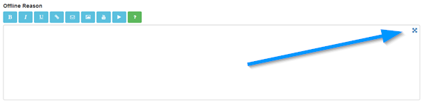
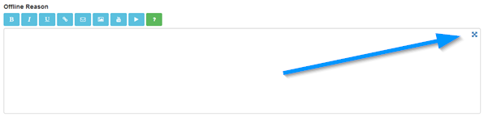
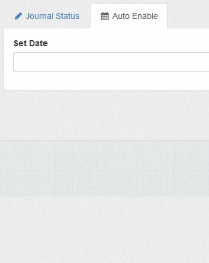
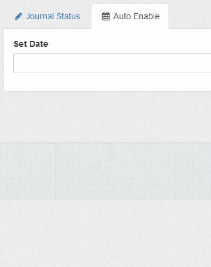

Offline Settings
Overview
Offline settings for your journal website. Useful if you need to take your site offline for maintenance.
Journal Status > System Online
Enable or disable system
Journal Status > Offline Reason
Enter reason for site being offline. You can do basic formatting via the BBcode buttons if they are enabled.

More information here.
Clicking the crosshair shows a bigger textarea. This might be useful for small devices.

More information here.
Clicking the crosshair shows a bigger textarea. This might be useful for small devices.

Auto Enable > Set Date
If required you can have the site automatically reactivate itself on a certain date / time. Click in box to launch calendar and select date / time. Use sliders to select time.

Note that for auto activation, you will need to set up a cron job. More information here.

Note that for auto activation, you will need to set up a cron job. More information here.